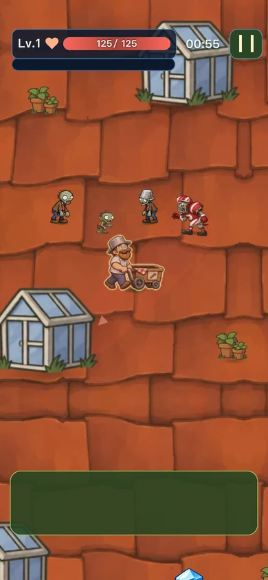
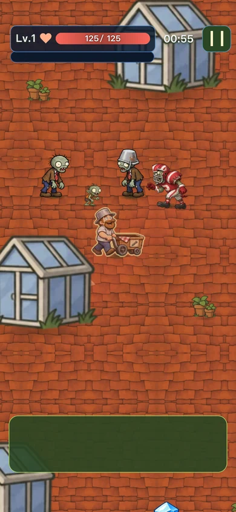
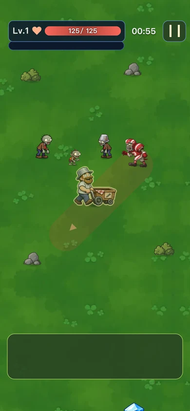
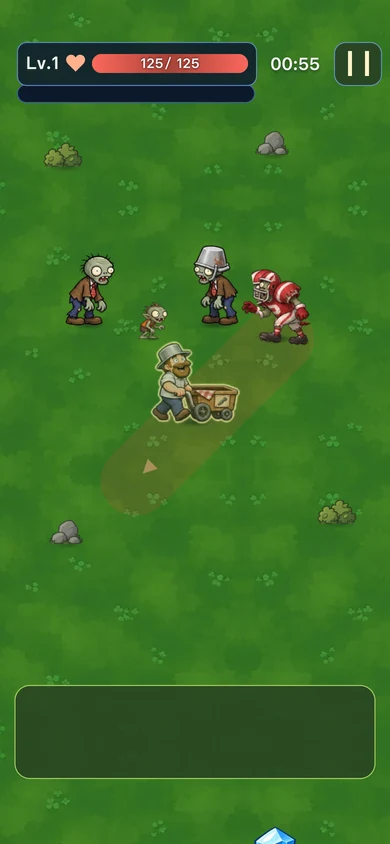
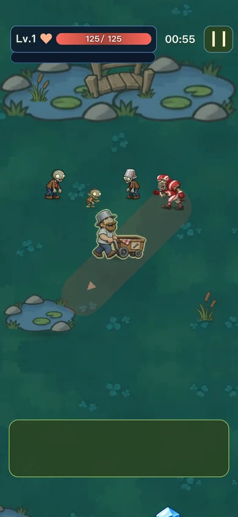
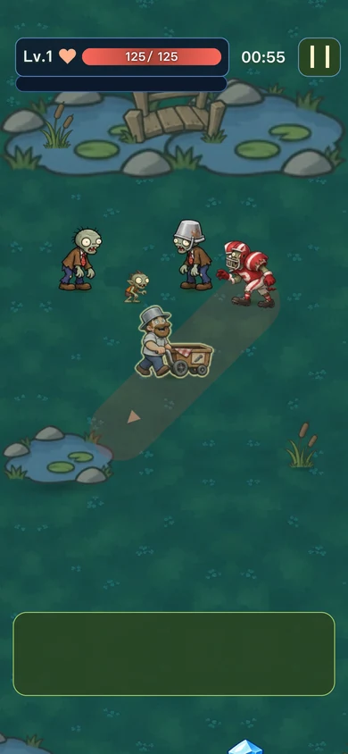
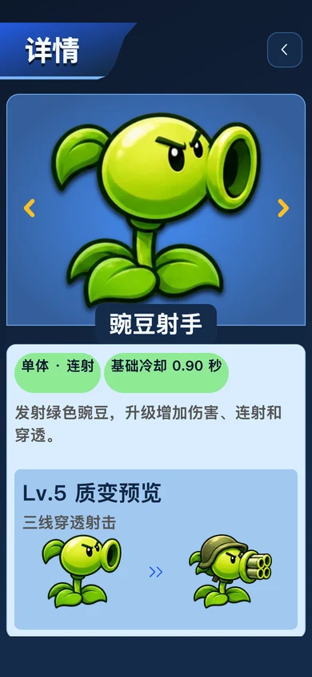
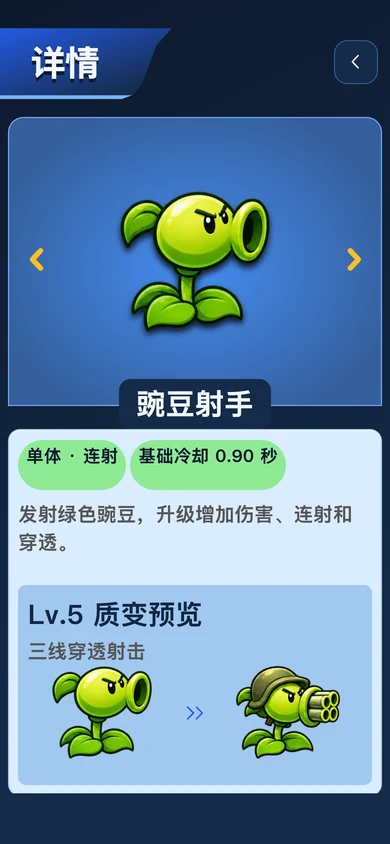

以下是同一 390 × 844 视口的实际运行截图，三张战场沿用同一组角色。布局复测覆盖 12 种视口配置，每种 21 个场景。另外采集了首次加载、三张地图和 48 个图鉴详情。测试设备像素比均为 3。
运行清单共有 95 张位图，压缩后共 3.95 MiB。按 RGBA 估算，全部解码约 63.5 MiB。








倍率按图片绘制所需的物理像素与源图像素计算。高于 1 表示存在放大。此表采集页面图片元素，文字、矢量图和战斗画布另行检查。
| 场景 | 原最高 | 现最高 | 当前素材 |
|---|---|---|---|
| loading | 4.64× | 1.50× | forge-loading.webp |
| lobby | 2.53× | 1.65× | forge-workshop.webp |
| tutorial | 2.25× | 0.75× | ground-sun.webp |
| settings | — | — | 无位图 |
| music | — | — | 无位图 |
| map | 2.09× | 1.31× | forge-map-day.webp |
| heroes | 2.49× | 1.13× | portrait-dave.webp |
| prepare | 1.01× | 1.01× | cabbage.webp |
| unlock | 1.79× | 1.79× | kernel.webp |
| battle | 0.68× | 0.68× | cabbage.webp |
| crowd | 0.68× | 0.68× | cabbage.webp |
| boss | 0.68× | 0.68× | cabbage.webp |
| evolution | 1.84× | 1.84× | gatling.webp |
| upgrade | 1.20× | 1.20× | pea.webp |
| pause | 0.84× | 0.68× | cabbage.webp |
| pause-map | 0.68× | 0.68× | cabbage.webp |
| build | 0.72× | 0.72× | cabbage.webp |
| result | 5.82× | 1.12× | ground-coin.webp |
| guide | 1.04× | 1.04× | cabbage.webp |
| detail | 2.91× | 1.66× | pea.webp |
| shop | 1.18× | 0.89× | cabbage.webp |
| permanent | 1.18× | 0.89× | magnet.webp |
| animations/balloon-idle.webp | 192 × 192 |
| animations/balloon.webp | 768 × 192 |
| animations/boss-captain-idle.webp | 192 × 192 |
| animations/boss-captain.webp | 768 × 192 |
| animations/boss-marsh-idle.webp | 192 × 192 |
| animations/boss-marsh.webp | 768 × 192 |
| animations/boss-mech-idle.webp | 192 × 192 |
| animations/boss-mech.webp | 768 × 192 |
| animations/boss-trim-idle.webp | 192 × 192 |
| animations/boss-trim.webp | 768 × 768 |
| animations/bucket-idle.webp | 192 × 192 |
| animations/bucket.webp | 768 × 768 |
| animations/cone-idle.webp | 192 × 192 |
| animations/cone.webp | 768 × 768 |
| animations/dancer-idle.webp | 192 × 192 |
| animations/dancer.webp | 768 × 192 |
| animations/dave-idle.webp | 192 × 192 |
| animations/dave.webp | 768 × 768 |
| animations/digger-idle.webp | 192 × 192 |
| animations/digger.webp | 768 × 192 |
| animations/flora-idle.webp | 192 × 192 |
| animations/flora.webp | 768 × 768 |
| animations/football-idle.webp | 192 × 192 |
| animations/football.webp | 768 × 192 |
| animations/imp-idle.webp | 192 × 192 |
| animations/imp.webp | 768 × 192 |
| animations/jetpack-idle.webp | 192 × 192 |
| animations/jetpack.webp | 768 × 192 |
| animations/newspaper-idle.webp | 192 × 192 |
| animations/newspaper.webp | 768 × 192 |
| animations/rusty-idle.webp | 192 × 192 |
| animations/rusty.webp | 768 × 768 |
| animations/wizard-idle.webp | 192 × 192 |
| animations/wizard.webp | 768 × 192 |
| animations/zombie-idle.webp | 192 × 192 |
| animations/zombie.webp | 768 × 768 |
| release/bag-v2.webp | 512 × 483 |
| release/bamboo.webp | 240 × 240 |
| release/bonk.webp | 240 × 240 |
| release/boomerang.webp | 280 × 255 |
| release/button.webp | 512 × 161 |
| release/cabbage.webp | 240 × 240 |
| release/cabbagevolt.webp | 240 × 240 |
| release/cactus.webp | 240 × 240 |
| release/cherry.webp | 240 × 240 |
| release/chest-v2.webp | 512 × 465 |
| release/chomper.webp | 240 × 240 |
| release/coconut.webp | 240 × 240 |
| release/coin-v10.webp | 96 × 96 |
| release/crystal-v2.webp | 303 × 528 |
| release/forge-dave-standing.webp | 660 × 900 |
| release/forge-loading.webp | 780 × 1690 |
| release/forge-map-day.webp | 890 × 405 |
| release/forge-map-night.webp | 890 × 405 |
| release/forge-map-roof.webp | 890 × 405 |
| release/forge-workshop.webp | 768 × 1536 |
| release/garden-grass.webp | 512 × 512 |
| release/garden-night.webp | 512 × 512 |
| release/garden-props.webp | 512 × 384 |
| release/garden-roof.webp | 512 × 512 |
| release/gatling.webp | 306 × 275 |
| release/gem-v10.webp | 96 × 96 |
| release/ground-coin.webp | 192 × 192 |
| release/ground-gem.webp | 192 × 192 |
| release/ground-heal.webp | 192 × 192 |
| release/ground-sun.webp | 192 × 192 |
| release/ice.webp | 294 × 269 |
| release/iceberg.webp | 240 × 240 |
| release/jalapeno.webp | 240 × 240 |
| release/kernel.webp | 240 × 240 |
| release/laser.webp | 240 × 240 |
| release/lightning.webp | 240 × 240 |
| release/logo-trim.webp | 930 × 575 |
| release/magnet.webp | 240 × 240 |
| release/melon.webp | 240 × 240 |
| release/mushroom.webp | 234 × 299 |
| release/paper-v2.webp | 220 × 180 |
| release/parchment.webp | 512 × 494 |
| release/pea.webp | 272 × 254 |
| release/portrait-dave.webp | 539 × 510 |
| release/portrait-flora.webp | 448 × 510 |
| release/portrait-rusty.webp | 521 × 510 |
| release/potato.webp | 240 × 240 |
| release/seed-v2.webp | 465 × 482 |
| release/sign.webp | 512 × 164 |
| release/snapdragon.webp | 240 × 240 |
| release/squash.webp | 240 × 240 |
| release/starfruit.webp | 240 × 240 |
| release/sun.webp | 275 × 272 |
| release/sunflower.webp | 257 × 276 |
| release/torchwood.webp | 240 × 240 |
| release/v10-effects.webp | 512 × 512 |
| release/v10-munitions.webp | 512 × 512 |
| release/walnut.webp | 245 × 268 |
| release/wood-v2.webp | 320 × 70 |